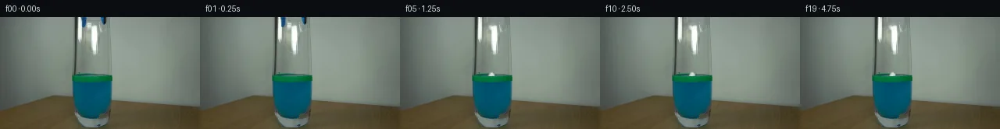

![首帧]()

Round 00
2026-11-05T15:08:07.722996+00:00像素候选变化代码 +200/−0inspection 更新
pixels c86f3f9874a9abfe · code a752353fc58c669e
查看本轮 generate.py 真实 diff
--- previous/generate.py
+++ current/generate.py
@@ -0,0 +1,200 @@
+"""Source-derived pixel animation; no image viewing, models, or external assets."""
+from pathlib import Path
+import json
+import numpy as np
+from PIL import Image, ImageDraw
+import cv2
+from scipy.ndimage import map_coordinates, gaussian_filter
+from artifact_io import save
+
+ROOT = Path(__file__).resolve().parent
+SOURCE = np.asarray(Image.open(ROOT / 'first_frame.png').convert('RGB'))
+H, W = SOURCE.shape[:2]
+Y, X = np.mgrid[:H, :W].astype(np.float32)
+S = SOURCE.astype(np.float32)
+
+
+def polygon_mask(points, scale=8):
+ canvas = Image.new('L', (W * scale, H * scale), 0)
+ ImageDraw.Draw(canvas).polygon([(round(x * scale), round(y * scale)) for x, y in points], fill=255)
+ return np.asarray(canvas.resize((W, H), Image.Resampling.LANCZOS), dtype=np.float32) / 255
+
+
+# Source masks are measured from RGB values, not supplied segmentation assets.
+left_shape = polygon_mask([(103.7, -2), (110.3, -2), (110.7, 7.5),
+ (110.0, 10.5), (108.8, 12.8), (105.6, 13.3), (104.7, 10.8)])
+right_shape = polygon_mask([(128.5, -2), (135.7, -2), (135.3, 6.5),
+ (134.6, 9.3), (132.8, 10.1), (130.7, 8.8), (129.7, 5.4)])
+blue_strength = np.clip((S[..., 2] - S[..., 0] - 13) / 23, 0, 1)
+dark_strength = np.clip((95 - S[..., 1]) / 40, 0, 1)
+left_alpha = left_shape * blue_strength
+right_alpha = right_shape * np.maximum(blue_strength, dark_strength)
+# Capture fringes to avoid leaving the original tips at the rim.
+left_remove = cv2.dilate((left_alpha > .025).astype(np.uint8), np.ones((3, 3), np.uint8))
+right_remove = cv2.dilate((right_alpha > .025).astype(np.uint8), np.ones((3, 3), np.uint8))
+left_remove[:, :104] = 0
+left_remove[:, 112:] = 0
+left_remove[15:] = 0
+right_remove[:, :128] = 0
+right_remove[:, 137:] = 0
+right_remove[12:] = 0
+
+# Reconstruct only hidden tool pixels. The glass reflection is extrapolated from
+# the immediately visible section of the same columns beneath the tool.
+plate_tools = S.copy()
+for y, x in zip(*np.nonzero(left_remove)):
+ ref = np.median(S[14:19, x], axis=0)
+ if x <= 104:
+ ref = ref * np.mean(S[y, 101:104]) / np.mean(S[16, 101:104])
+ else:
+ ref += S[y, 140] - S[16, 140]
+ plate_tools[y, x] = np.clip(ref, 0, 255)
+right_filled = cv2.inpaint(SOURCE, (right_remove * 255), 3, cv2.INPAINT_TELEA)
+plate_tools[right_remove > 0] = right_filled[right_remove > 0]
+
+# Small pale folded object beside the left tip; keep the long glass highlight.
+paper_shape = polygon_mask([(110.2, 8.1), (111.5, 6.8), (115.9, 7.2),
+ (117.2, 8.5), (117.0, 11.0), (116.3, 14.4),
+ (114.0, 15.6), (111.1, 13.5), (110.4, 11.3)])
+paper_remove = (paper_shape > .025).astype(np.uint8)
+paper_remove = cv2.dilate(paper_remove, np.ones((3, 3), np.uint8))
+paper_remove[:, 118:] = 0
+clean = cv2.inpaint(np.uint8(np.rint(plate_tools)), paper_remove * 255, 3, cv2.INPAINT_TELEA).astype(np.float32)
+# Use local luminance excess to refine translucent fringes; the actual fold
+# coloration is sampled from the input patch.
+excess = np.mean(S - clean, axis=2)
+paper_alpha = paper_shape * np.clip((excess + 2) / 35, 0, 1)
+paper_alpha[(X < 110) | (X >= 118) | (Y < 6) | (Y > 17)] = 0
+# Foreground RGB is decontaminated from the nearby gray-green background.
+a = np.maximum(paper_alpha[..., None], .20)
+paper_rgb = np.clip((S - clean * (1 - a)) / a, 0, 255)
+paper_rgb = .86 * paper_rgb + .14 * np.array([226, 231, 221], np.float32)
+
+
+def composite_transform(canvas, rgb, alpha, dx=0, dy=0, angle=0, center=(0, 0), scale=1):
+ radians = np.deg2rad(angle)
+ c, s = np.cos(radians), np.sin(radians)
+ cx, cy = center
+ xx, yy = (X - cx - dx) / scale, (Y - cy - dy) / scale
+ sx = cx + c * xx + s * yy
+ sy = cy - s * xx + c * yy
+ out_alpha = map_coordinates(alpha, [sy, sx], order=1, mode='constant', cval=0)
+ premul = rgb * alpha[..., None]
+ out_premul = np.stack([map_coordinates(premul[..., k], [sy, sx], order=1,
+ mode='constant', cval=0) for k in range(3)], axis=2)
+ return canvas * (1 - out_alpha[..., None]) + out_premul, out_alpha
+
+
… diff truncated; 113 more lines …